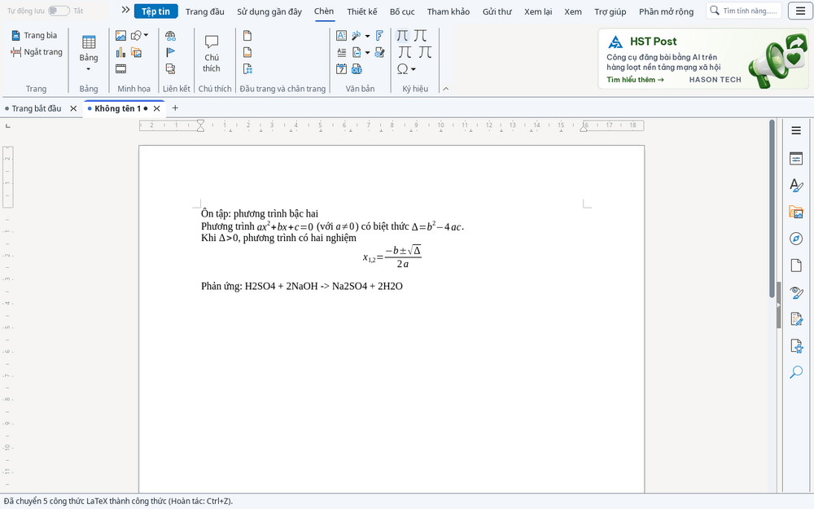

Văn bản
Văn bản: công thức toán
HST Office có ba cách đưa công thức toán vào tài liệu: gõ công thức mới, chuyển mã LaTeX đã gõ thành công thức, và chuyển công thức MathType trong tệp Word thành công thức sửa được ngay trong HST Office.
Các lệnh nằm ở thẻ , nhóm : , , (chỉ HST Writer) và . Khi cửa sổ hẹp, nhóm chỉ còn biểu tượng; rê chuột lên biểu tượng để xem tên lệnh.
Công thức mới
Nhấn Ctrl+Alt+Q (macOS: ⌘+⌥ Option+Q) hoặc bấm để mở một công thức mới ngay tại con trỏ. Phím này dùng được trong HST Writer, HST Sheets, HST Slides và HST Draw. Trong HST Writer trên máy Windows có cài MathType, Ctrl+Alt+Q chèn một công thức MathType mới và mở MathType như trong Word; nút vẫn mở HST Công thức.
Bấm để mở công thức mới, kèm bảng phần tử công thức ở danh mục ; bên cạnh có và . Bấm một mẫu để chèn, rồi nhấn F4 để chuyển tới ô trống tiếp theo của mẫu.
| Chèn | Phím tắt |
|---|---|
| Phân số / phân số chéo | Ctrl+F · Ctrl+/ |
| Căn bậc hai | Ctrl+R |
| Số mũ / chỉ số dưới / cả hai | Ctrl+H · Ctrl+L · Ctrl+J |
| Ngoặc tròn / ngoặc vuông | Ctrl+9 · Ctrl+[ |
Chuyển TeX ⇄ công thức
Trong HST Writer, bạn có thể gõ công thức bằng mã LaTeX ngay trong văn bản rồi chuyển một lần thành công thức thật.
- Gõ mã LaTeX trong một trong các cặp dấu
$…$,$$…$$,\(…\)hoặc\[…\], ví dụ$x^2+y^2=r^2$. - Chọn đoạn cần chuyển; không chọn gì thì lệnh chuyển cả tài liệu.
- Nhấn Alt+\, hoặc bấm ở thẻ . Trên thanh trình đơn, lệnh nằm trong , ngay sau lệnh chèn công thức.
Thanh trạng thái báo số công thức đã chuyển. Cả lệnh là một lần hoàn tác (Ctrl+Z). Đoạn mã không chuyển được vẫn giữ nguyên chữ và được tô vàng để bạn kiểm tra.

$…$ thành công thức trong dòng, mã $$…$$ thành công thức trên dòng riêng.Muốn sửa lại bằng mã LaTeX: chọn một công thức rồi dùng lại lệnh, công thức trở về mã LaTeX.
Công thức MathType trong tệp Word
Tệp Word soạn bằng MathType chứa công thức dạng ảnh, không sửa được nếu máy không có MathType. HST Công thức chuyển các công thức này thành công thức sửa được ngay trong HST Office.
- Thanh gợi ý khi mở tệp: mở văn bản có công thức MathType, thanh phía trên tài liệu báo “Tài liệu có … công thức MathType. Chuyển sang công thức HST để sửa được?”. Bấm để chuyển hết, hoặc để để nguyên. Máy có cài MathType không hiện thanh này: công thức vẫn sửa bằng MathType như trước, còn lệnh vẫn có trên thẻ Chèn.
- Chuyển cả tài liệu bất cứ lúc nào: thẻ ▸ . Cả lần chuyển là một lần hoàn tác. Trên máy có cài MathType, mỗi công thức chuyển lâu hơn (tài liệu hàng trăm công thức có thể mất hơn một phút); hãy chờ tới khi HST Office báo kết quả.
- Chuyển từng công thức: nhấp đúp vào một công thức MathType rồi chọn hoặc . Trên máy có cài MathType, nhấp đúp mở thẳng MathType để sửa như trong Word.
- Tự chuyển khi mở: đánh dấu trong . Tùy chọn này được tắt sẵn. Khi bật, công thức được chuyển cả trên máy có cài MathType và sau đó không còn mở bằng MathType; nếu muốn tiếp tục sửa bằng MathType, hãy để tắt.
Số trang của tài liệu được giữ nguyên: công thức đã chuyển có thể nhỏ đi một chút (tới 25 %) để vừa chỗ cũ. Công thức nào không đọc được thì giữ nguyên như cũ, và vẫn được giữ khi lưu.
.docx. Khi lưu sang định dạng cũ như .doc, HST Office báo trước: công thức được ghi theo kiểu cũ mà Word bản mới vẫn xem và in được nhưng không sửa được.Công thức lưu sang .docx giữ tên hàm (sin, cos, log, lim…) đứng thẳng, mũi tên có chữ trong phương trình hoá học và căn lề của hệ phương trình. Định dạng nhanh công thức hoá học như H₂SO₄ trong đoạn văn: xem Định dạng công thức hoá học.